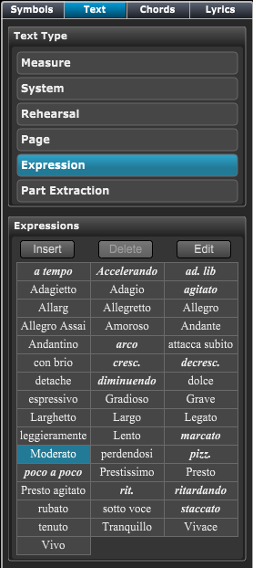
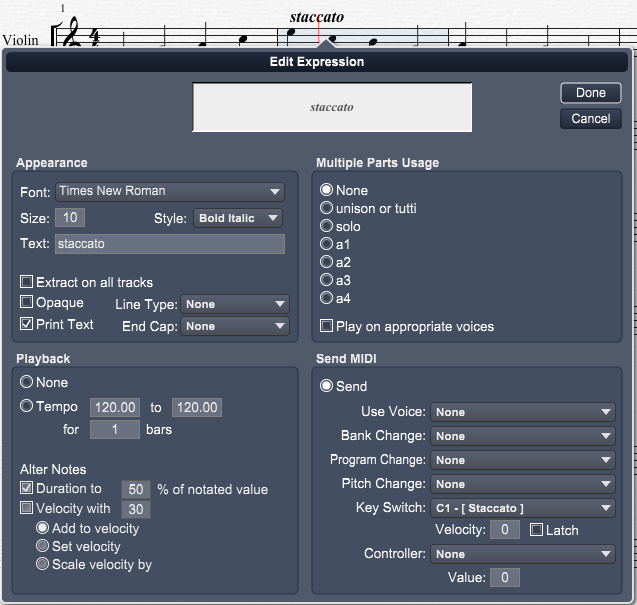
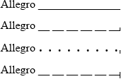

Tools Panel - Expression Text
Tools Panel - Expression Text
If Tools Panel is not showing click on the Score Tools button at top left of Control Bar and then click on the Text section in the header if it's not active.
You can also type "Ctrl[Cmd]-Shift-T" to go directly to the Text section.
When you click on the Expression text type an list of common expression will appear below.
 |
Using the Expressions PaletteThe Expressions type section contains a palette of commonly used musical terms. You can enter expressions anywhere in the Score View and do not need to apply them to notes as you do other palette tools. Expressions are, however, owned by the track in which you enter them. Moving an expression to another track changes its ownership. When you finish moving or entering an expression, the blinking cursor shows the track that owns the expression. You can create additional Expressions libraries or edit the existing library. You can play expressions by assigning them a controller and value, tempo, or patch. To enter Expression text
or
To create a new expression text
To edit an expression text
To delete an expression text
Note: Only expression text you have created can be deleted. |
Double-click an expression in the Score View to open the Edit Expression dialog box shown below.
You can edit expressions here for changes that were not defined in the library.

The options in the top half of the dialog box determine how the expression appears. Set the Font, Size, and Style attributes in the same manner as in other Overture dialog boxes. Select text style attributes by using the Style pop-up menus. You can change the text for that expression in the Edit Expression dialog box without affecting future uses of that expression from the palette. You can use this technique to create an expression that doesn't exist in the library by changing the text to the new expression. You can also insert to add expressions or delete expressions from the library.
Select Extract On All Tracks to include that expression with any extracted track. Select Print Text to print the expression when that track is selected for printing.
Some expressions span several notes. A line shows the time in which the expression is active. Use the Line Type option to configure how the line appears. The End Cap option determines how the line terminates. The various options are illustrated in the figure below.

Solid line, no end capDashed line, end cap up
Dotted line, end cap down
Dashed line end cap up and down
Click an expression to select it and shows its handles. Drag the handle at the end of the line to change its length. Double-clicking the expression in the palette that has been torn off, opens a similar dialog box without the Print Text, Line Type, and End Cap options. Those options are specific to either the track in which you enter the expression or the type of line present in the expression; you don't know either attribute until you actually enter the expression in the Score View.
Use these setting to trigger Extracted Parts divisi settings. See the Creating Active Parts for more information.
You can play expressions in Overture by assigning them an appropriate tempo, patch, program change, controller and value, key switch, or use the expression to switch playback voice. For example, if an expression denotes a staccato sound for a guitar, changing the patch to a muted guitar sound might sound better than creating short note durations. Note: You can't realistically play all expressions you specify.
If you double-click an expression in the Expressions palette, the Patch section contains program change numbers instead of patch names because Overture doesn't know which track will eventually contain the expression and to which device the track will be assigned.
The following describes each of the Playback Options:
The following describes each of the Send Options: